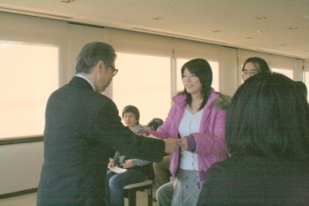
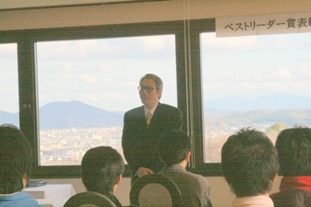
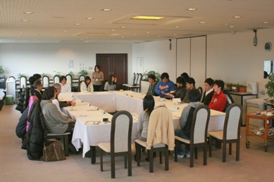

|
表彰式の様子
|
|

|
2007年度のベストリーダー賞表彰式を、平成20年１月17日（木）
15:00〜、岡山理科大学11号館８階ラウンジにて開催しました。
当日は、欠席者２名を除く受賞者15名（内、２部門受賞者２名）が参加し、中島聰図書館長より、表彰状と副賞の図書カードが授与されました。
|
表彰状授与の後、中島館長から受賞者の方々へ祝辞が述べられました。 |

|
|
懇親会の様子
|
|

|
表彰式後、ベストリーダー賞受賞者と、図書館職員との懇談会を行い、受賞の感想や図書館への要望などが談義されました。
|
|
受賞の感想
|
|
ベストリーダー大賞
|
ベストリーダー新人賞
|
|
理工系分野１位 葛西理佳子
510冊という凄い冊数となりました。ただ、私にとってはこんなに借りていたかなと思っています。
昔から、本が好きというのもありますが、図書館でアルバイトをしていましたので、
アルバイトなどで、面白い本を見つけるとすぐ借りて、だいたい週に２〜３冊読んでいました。
今回、賞をいただけて、とても嬉しかったです。
|
理工系分野１位 中村宗樹
私は理工系１位と人文・社会科学２位で賞をいただきました。３年後に510冊を抜ける様に頑張りたいと思います。
|
|
人文・社会科学分野１位 大西雄三
私も、（特に賞などを意識せず）普通に生活していました。
表彰式がなければ、ただ過ぎていたのではないでしょうか。表彰式に感謝しています。
４年間やってきたことが、こうして形となり、嬉しいなぁと思います。これからも、しっかり勉強していきます。
|
人文・社会科学分野１位 福岡祥子
これほど借りているとは、正直、思いませんでした。
人文・社会科学分野で特に借りたのが英語のリーダーでした。 そこから、こういう本を読みたいと他の本も色々と見る様になりました。
図書館の環境が気に入っています。
|
|
文学分野１位 喜岡信博
正直、ここまで本を読んでいたとは思いませんでした。中学生の頃に好きだった赤川次郎の本を読み返しています。 図書館から連絡が来て、はじめて賞のことを知りました。ありがとうございます。 |
文学分野１位 武田淳司
私も、これほど借りているとは思いませんでした。講義などがないときに、図書館に入り浸っているので、それで増えたかも知れません。
|
|
総評
|
総評
|
|
図書館事務室参事 西崎徹
４年生の方は、理工系の専門書を多く借りた方が多かったです。
２〜４年生での集計ですが、理工系の受賞者で１位510冊、２位335冊、３位286冊借りています。
専門分野の図書だけで、こんなに読むのは凄いことです。
この４年間に図書館に接したという経験を生かし、社会人になっても図書館を利用する様にしてください。
|
図書館事務室参事 西崎徹
１年生の方は、文学を借りる方が多かったです。
多い人になりますと、１日１冊のペースで読んでいます。
私もよく本を読みますが、改めて先日調べますと、それでも、この期間では90冊程度でした。
学年が上がり、専門分野を勉強する様になりますのでこれを機会に４年生の方を見習って専門分野の図書も多く読む様にし、専門分野の勉強に励んでください。
|